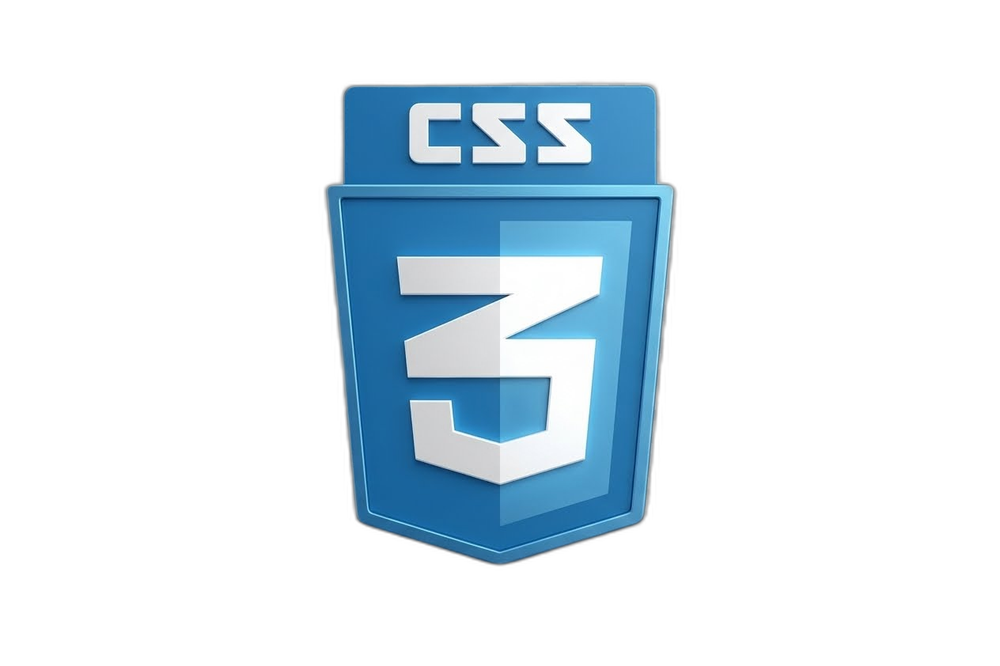

Esta sección nos mostrará el secreto de cada vista web a la hora de ponerle un estilo que le da los colores, las posiciones respectivas y la apariencia definitiva que tiene cada elemento de ella. Es aquí donde entra el CSS, quien es exactamente el lenguaje encargado de realizar todo esto a través de diferentes funciones que podemos crear manualmente. Estas se denominan clases y van siempre asignadas a uno o varios elementos a la vez. Cada una de estas contiene los estilos respectivos.

.clase{
}
body{
}
#clase{
}
<div class="clase">
<body>
<div id='clase'>
Como se ve en las líneas anteriores, existen no solo una sino varias formas de dar estilos a muchos elementos. En primer lugar está la creación de una clase. Estas son las más comunes, ya que pueden ser creadas manualmente desde un archivo CSS con cualquier nombre, pero poniendo antes un punto adelante del nombre como identificador de que es una clase. Para proseguir con el ejemplo, donde nombre debe ser aplicado a través del atributo class a un elemento, en este caso un div, para así llevar dentro de sí el nombre de clase creada.
La segunda manera consiste en poner el nombre de la etiqueta directamente para establecer los estilos exactos. Esto se puede usar como alternativa cuando no se desea establecer más de una clase a un elemento en sí, como lo serían: body, div, h1, img, card, etc.
La tercera manera es un poco diferente a las anteriores, ya que como tal aquí esta puede ser usada para aplicar estilos a elementos a través de id o identificadores. Estos son agregados para saber cuál elemento en específico se le tiene que agregar los estilos que se le darán. Esto teniendo primero como asignación el carácter # antes del nombre del identificador, ya a diferencia del atributo class que es para poner un nombre de clase. En el caso de los id, en el elemento se debe poner el atributo id para seguido poner dentro el nombre del identificador del elemento.
.clases{
margin-left: 10px;
margin-right: 10px;
margin-top: 10px;
font-size: 16px;
font-family: Arial;
width: 200px;
height: 100px;
position: relative;
color: #000;
background-color: #fff;
}
hasta aqui es el final de esta larga seccion explicativa a sido un honor detallar todo acerca del css mas que todo en la parte de como crear cada clase y los atributos que son de suma importancia a la hora de husarse en el html mismo para garantizar una excelente visualzion al usuario.